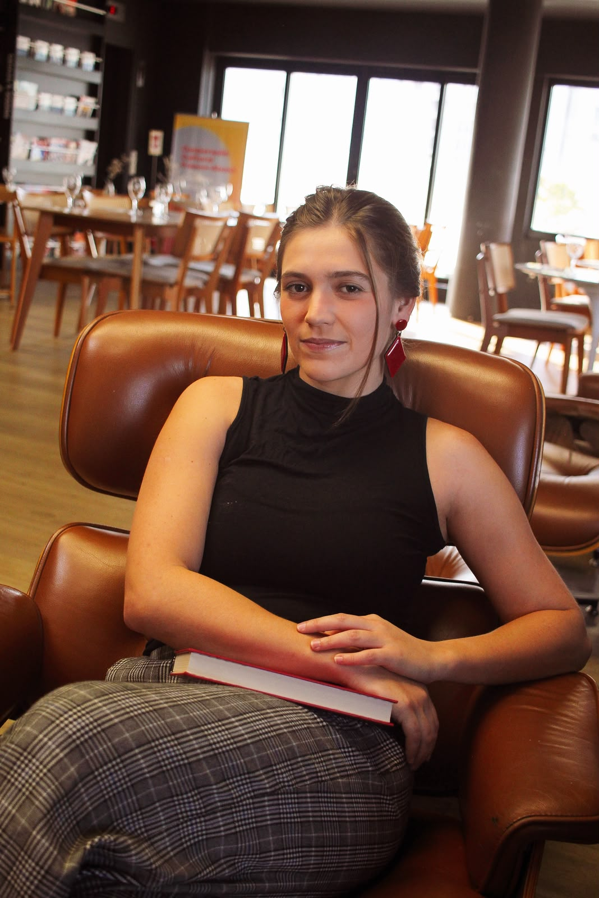
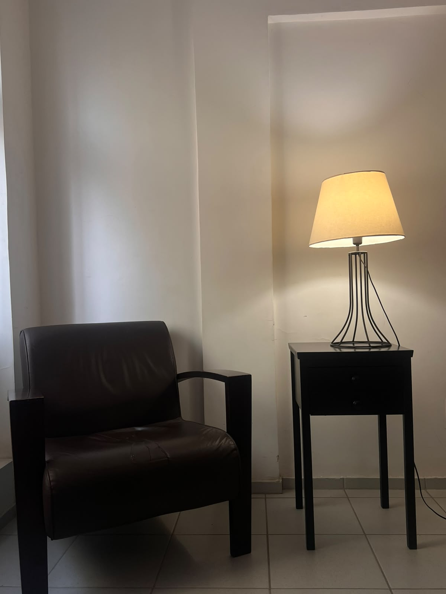

Atendimentos on-line e presenciais
Jovens, adultos e idosos — presencial em Botafogo, RJ, ou on-line em qualquer lugar do Brasil e fora dele
“Se a boca se cala, falam as pontas dos dedos.”

Sou psicóloga clínica formada pela Universidade Federal do Rio de Janeiro (UFRJ) e atuo orientada pela psicanálise, atendendo jovens, adultos e idosos.
Meus atendimentos acontecem de forma presencial, em Botafogo (RJ), ou on-line — você pode estar em qualquer lugar do Brasil, ou fora dele, e caminharemos juntos.

O processo analítico se sustenta através da relação que construímos, sessão a sessão, entre analista e analisando — presencialmente, em Botafogo (RJ), ou on-line. Diferente de uma conversa social, usamos aqui um método chamado associação livre.
Você é convidado a falar livremente sobre o que vier à cabeça — sem se preocupar com filtros, julgamentos ou se aquilo faz sentido para mim. De um sonho estranho a um incômodo do dia a dia, a liberdade é sua.
Como analista, ofereço uma escuta especializada. Posso fazer perguntas, apontar questões que passam despercebidas e interpretar pontos da sua fala, para que decifremos juntos os sentidos do seu inconsciente.
A única regra aqui é a espontaneidade — é através dessa fala sem amarras que acessamos o que está escrito nas entrelinhas da sua história.
Vamos nos conhecer: você me conta o que te trouxe até aqui, eu explico como o tratamento funciona, combinamos valores, horários e compromissos — e decidimos juntos se seguiremos.
Gosto de pensar a mente como um iceberg. O que vemos na superfície — pensamentos lógicos, decisões do dia a dia — é só a ponta. Abaixo da água está o inconsciente: memórias esquecidas, medos e desejos que nem sabíamos que tínhamos.
A psicanálise, criada por Freud em Viena, parte de uma descoberta simples: quando não conseguimos transformar uma dor em palavras, o corpo encontra outros caminhos para expressá-la — sintomas físicos, angústias sem causa aparente, repetições que não entendemos.
Ao longo do processo, torna-se possível dar voz ao que estava calado. Deixamos de ser apenas levados pela correnteza do inconsciente e começamos a assumir o leme da nossa própria jornada.
Você pode agendar nossa primeira sessão pelo WhatsApp, com uma mensagem já pronta, ou por uma ligação, se preferir.
Agendar pelo WhatsApp →(21) 99548-5887
De acordo com o código de ética do CFP, não é permitido divulgar publicamente o valor dos atendimentos. Entre em contato para agendarmos uma entrevista inicial, quando conversamos sobre valores e forma de pagamento.
Os atendimentos costumam ser semanais. Dia, horário e frequência são definidos após a primeira sessão, considerando sua disponibilidade e o que combinarmos juntos.
Em média, 50 minutos. Isso é apenas uma estimativa — a duração real varia de acordo com o que você traz em cada sessão.
Não existe um prazo fixo. A duração do processo é conversada com você ao longo do caminho, à medida que aquilo que te trouxe até aqui vai sendo elaborado.